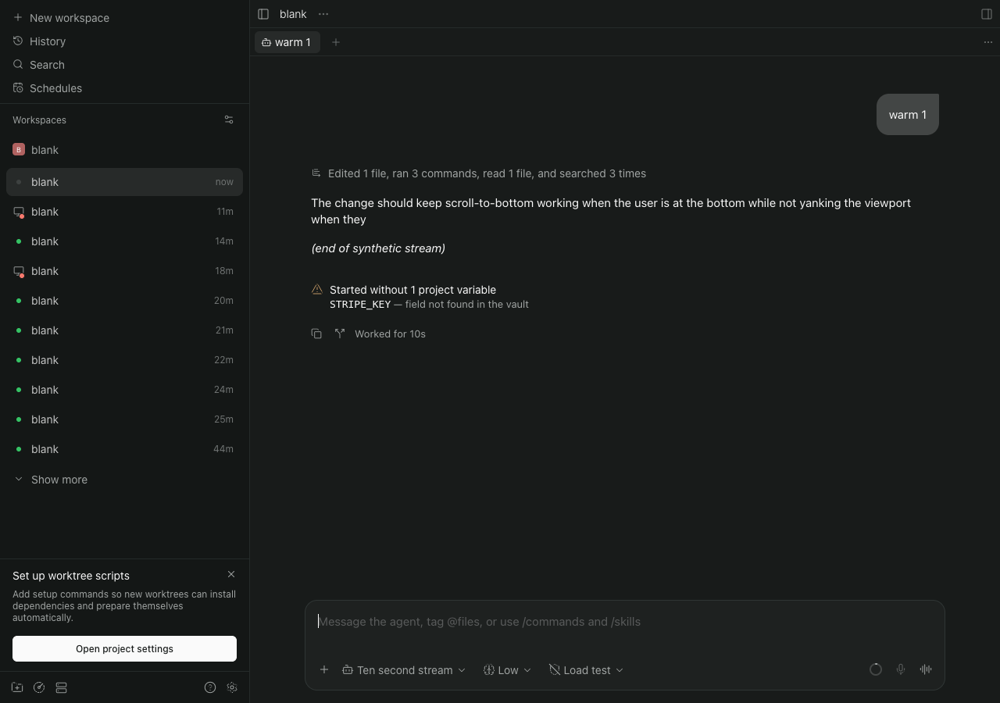
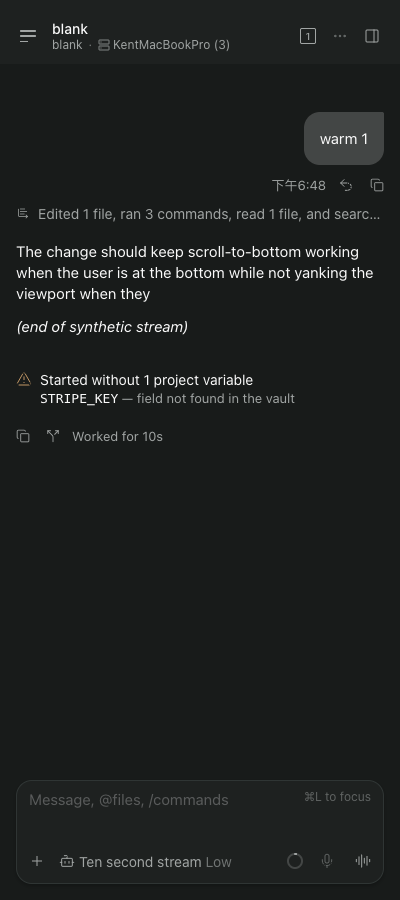
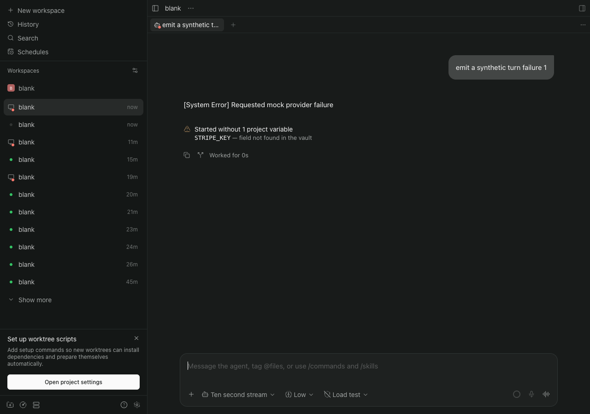
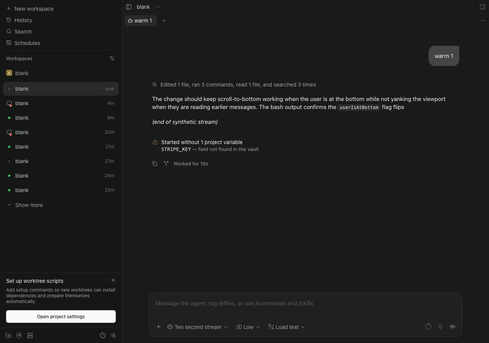
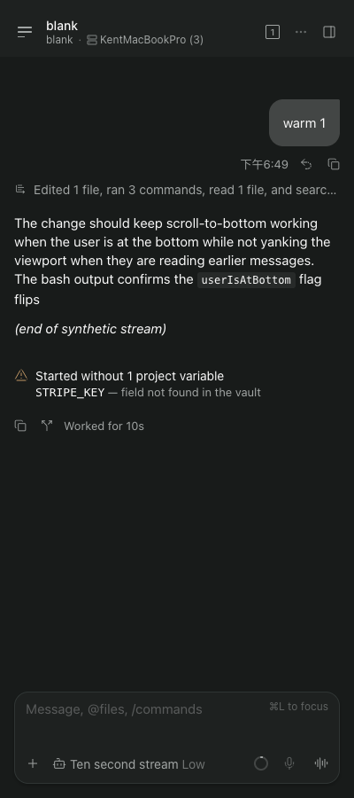
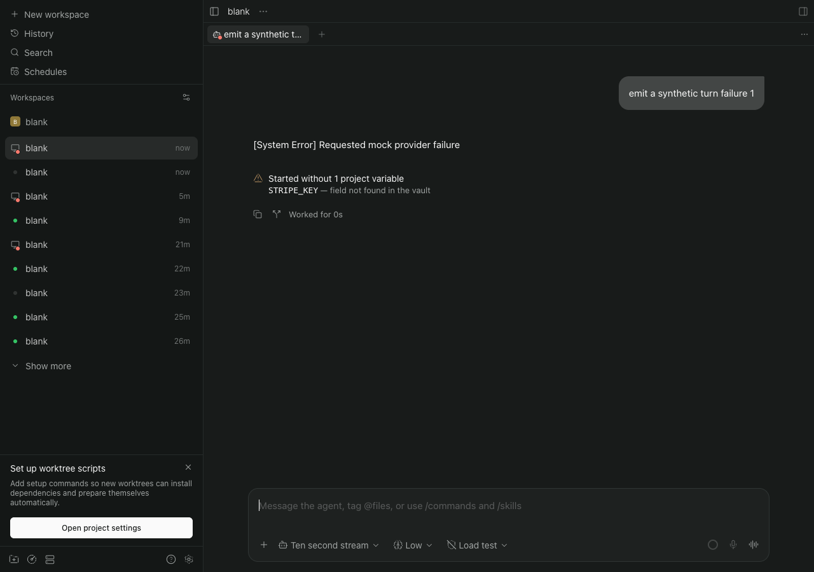
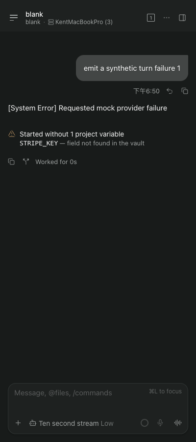
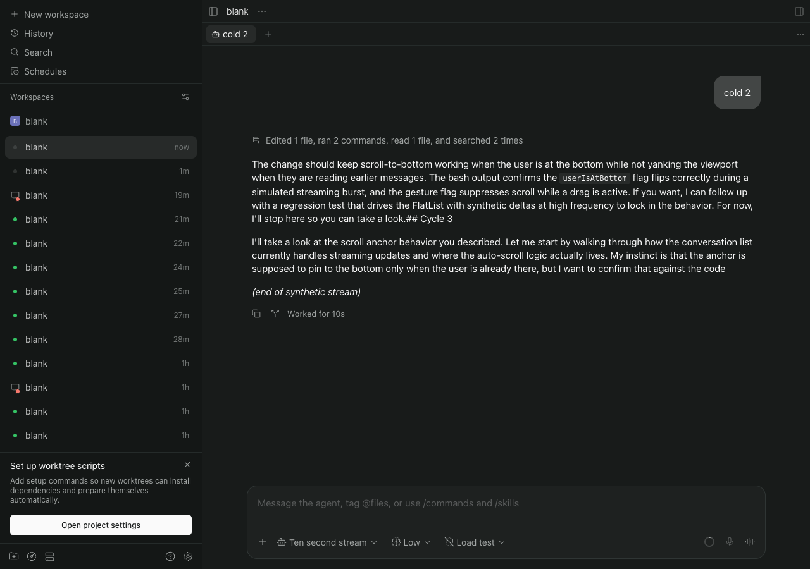
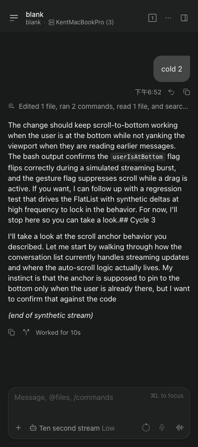
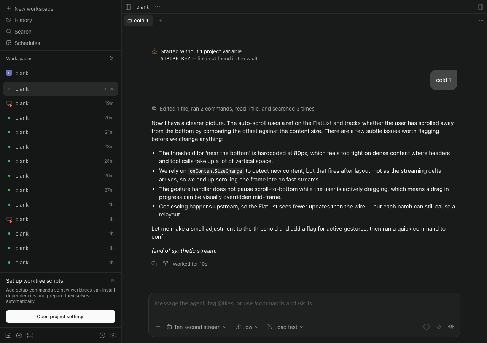

The "Started without" row in Paseo's default Chat display (disposable review page)
Real Paseo windows on isolated daemons (own home, fake op), default "Collapse turns" display, mock provider, one variable unreadable at create. cand-* is the proposed placement (row appended when the first turn ends); main-* is today's build, context only. Each picture is a fresh browser at the stated width.
Proposed design, Paseo 0.14.0

cand-warm-1-1280: row under the final reply, above "Worked for".

cand-warm-1-400: same at 400 px.

cand-fail-1-1280: a failed first turn still shows the row.cand-fail-1-400
Proposed design, Paseo 0.15.1

cand151-warm-1-1280

cand151-warm-1-400

cand151-fail-1-1280

cand151-fail-1-400
Today's build (context, not under review)

main-cold-2-1280 (0.14.0): row landed after the first message, folded away.

main-cold-2-400

main-cold-1-1280 (0.14.0): row landed before the first message, so it is shown at the top of the conversation (the lucky half of the race).